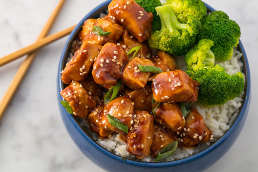

Teriyaki

Discription
This is a real yummy recipe. Serve it over a bed of rice. The leftovers go nicely in a whole wheat pita the next day for a warm delicious lunch. Hope you all enjoy!
Ingredients
- 2 tablespoons vegetable oil
- 1 pound skinless, boneless chicken breasts, cut into cubes
- 1 green bell pepper, sliced thin
- 1 yellow bell pepper, sliced thin
- 1 red bell pepper, sliced thin
- 1 ¼ cups sliced fresh mushrooms
- 1 onion, chopped
- 1 cup teriyaki sauce
- 1 (8 ounce) can pineapple chunks, undrained
- 1 teaspoon garlic powder
- 1 teaspoon crushed red pepper
- ¼ cup all-purpose flour
Steps
- Heat the oil in a wok or large skillet over medium-high heat. Cook the chicken until no longer pink in the center and the juices run clear, 7 to 10 minutes.
- Place the green bell pepper, yellow bell pepper, red bell pepper, mushrooms, onion, teriyaki sauce, pineapple chunks with the juice, garlic powder, and crushed red pepper into the wok, and turn the heat to medium. Bring to a simmer, stir in the flour, and continue simmering 15 minutes until thickened.
Return To Home